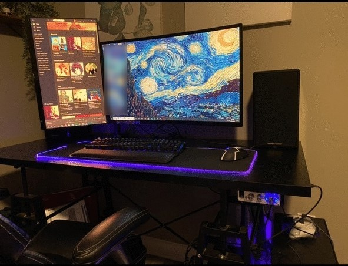
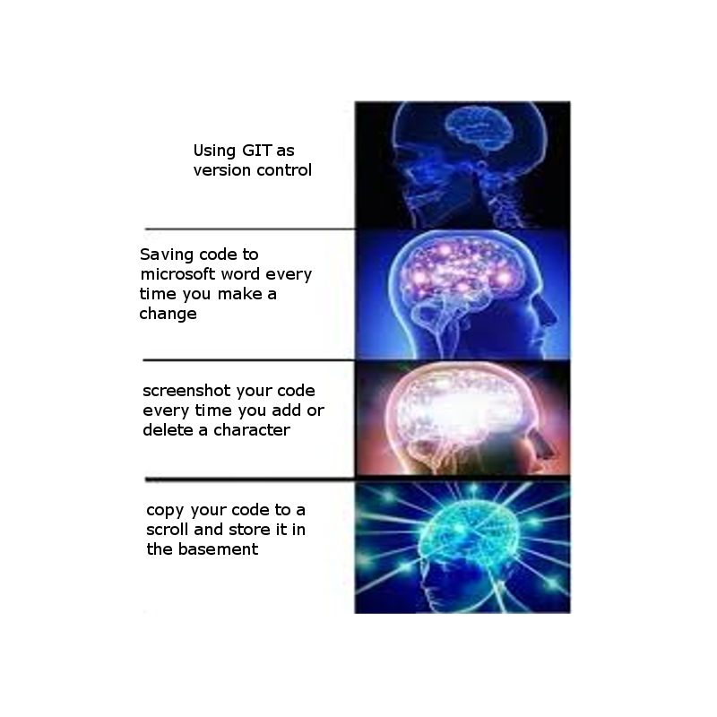

Clayton Helfert
About me
I am currently in my last semester at UNA. I am on course to graduate this coming May. I have lived in Florence for the past 3 years with my girlfriend, Allison. We have three cats, Fruitloop, Stevie and Cricket.
Github Profile
My Devbox

- Intel i7 8700
- Nvidia RTX 2070
- Logitech G502
- Razer Blackwidow Elite
- Pixio 325c
- Favorite IDE : Eclipse/NetBeans
5 topics we talked about in class
- What is Git? - Git is version control software
- What is a Git pull? - Pull requests let you tell others about changes you've pushed to a branch in a repository on GitHub.
- What is a Git push? - The git push command is used to upload local repository content to a remote repository. Pushing is how you transfer commits from your local repository to a remote repo.
- What is a Git commit? - The commit command is used to save your changes to the local repository.
- What is BASH? - Bash is the shell, or command language interpreter, for the GNU operating system. The name is an acronym for the ‘Bourne-Again SHell’
